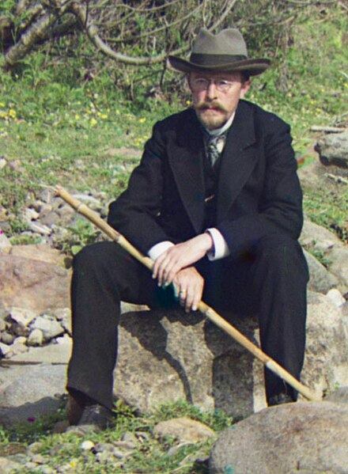

Sergey Mikhaylovich Prokudin-Gorsky, a Russian chemist and photographer, travelled around the whole Russian Empire under the permission of Tzar to take color photographs of everything. But the point is, there was no such a technique at the time for printing color photographs. He came up with a relatively easy idea that he could take picture of very scene on a plate using red, green, blue filters to acheieve a colorful image. And the main idea of this project is that we are given a data of an image with rgb filters, and we need to implement the idea to get a colorful photograph.
First and foremost, we need to read the images that are given to us. So we can print it out to see what can we do with it. In my application, I use matplotlib to read and show the image. And after reading the image, we can print out the image that we are given.
Note that the filter from top to bottom are b, g, r. So now we need to slice the images into 3 different part so that we can stack them altogether. What we do here is simply divided the hieght of the original image by 3 and them use index slicing to get the coresspoind part.
blue filter:
green filter:
red filter:
And as you can see, there are some border around the images, which we need to get rid of them or they will influence out later calculation. Here I didn't implement anything special, but just crop all 4 sides of the image by a fixed percentage (10 % in my case) of the image.
cropped image with blue filter:
After we finished processing all the 3 channels images, we can now start with the next step
After we have pre-processed all of our images, we can noe tarting to implement the technique to produce color photograph. The problem is, we still need to align all the different channels before we can stack them.
This is something you will get without any alignment:
So what we need to do is that choose a base channel out of 3 as a reference, and see how we can find the correct displacement of the other 2 channels baseon the base channel so they can be well aligned. The esiest implementation is that we can go over a small window of search, like [-15, 15] in my case. And try find the best displacement exhuastively.
How we check which one is the best displacement? The 2 naive ways are calculating the euclidean distacne or NCC (Normalized Cross-Correlation) between 2 images.
Euclidean Distance:
NCC:
As we can see, NCC perform better than euclidean distance, this is because Euclidean ditance directly calculate the pixel intesity between 2 images, which will be influenced a lot by brightness value. And NCC is less senstive to this issue, so NCC is more robust in this case.
The naive algorithm we implemented works fine as we just see, but the problem is, what if we have a really large file with better solution of the image like .tif files? Then the search window of this kind of image may need to be [-100, 100] or even bigger. Which is not really applicable and is really slow, so we need to improve our algorithm.
In order to deal with bigger image files, we can implement an algorithm called image pyramid. We first down sample the big image to a really small one. And then we do the brute force search in a small window like we did above. We then return the best displacement to the previous call (one step bigger image), and inherit the displacement, and do the the brute force search in a small window again. By repeating this process, we can save a lot of computation force and time.
G shift: [8, 50] R shift: [-8, 116]
B shift: [-48, -98] R shift: [34, 114]
G shift: [32, 118] R shift: [26, 248]
G shift: [34, 82] R shift: [46, 178]
G shift: [18, 102] R shift: [24, 222]
G shift: [20, 162] R shift: [26, 356]
G shift: [52, 102] R shift: [72, 216]
G shift: [58, 156] R shift: [74, 352]
G shift: [28, 106] R shift: [22, 224]